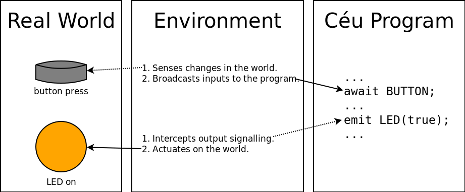

Overview¶
Céu provides Structured Synchronous Reactive Programming with the following general characteristics:
- Reactive: code executes in reactions to events.
- Structured: code uses structured control-flow mechanisms, such as
spawnandawait(to create and suspend lines of execution). - Synchronous: event reactions run atomically and to completion on each line of execution.
The lines of execution in Céu, known as trails, react all together to input events one after another, in discrete steps. An input event is broadcast to all active trails, which share the event as an unique and global time reference.
The example in Céu that follows blinks a LED every second and terminates on a button press:
input none BUTTON;
output on/off LED;
par/or do
await BUTTON;
with
loop do
await 1s;
emit LED(on);
await 1s;
emit LED(off);
end
end
The synchronous concurrency model of Céu greatly diverges from multithreaded and actor-based models (e.g. pthreads and erlang). On the one hand, there is no preemption or real parallelism at the synchronous core of the language (i.e., no multi-core execution). On the other hand, accesses to shared variables among trails are deterministic and do not require synchronization primitives (i.e., locks or queues).
Céu provides static memory management based on lexical scope and does not require a garbage collector.
Céu integrates safely with C, particularly when manipulating external resources (e.g., file handles). Programs can make native calls seamlessly while avoiding common pitfalls such as memory leaks and dangling pointers.
Céu is free software.
Environments¶
As a reactive language, Céu depends on an external host platform, known as an
environment, which exposes input and output events programs can use.
An environment senses the world and broadcasts input events to programs.
It also intercepts programs signalling output events to actuate in the
world:

As examples of typical environments, an embedded system may provide button input and LED output, and a video game engine may provide keyboard input and video output.
Synchronous Execution Model¶
Céu is grounded on a precise notion of logical time (as opposed to physical) as a discrete sequence of input events: a sequence because only a single input event is handled at a logical time; discrete because reactions to events are guaranteed to execute in bounded physical time (see Bounded Execution).
The execution model for Céu programs is as follows:
- The program initiates the boot reaction from the first line of code in a single trail.
- Active trails, one after another, execute until they await or terminate. This step is named a reaction chain, and always runs in bounded time. New trails can be created with parallel compositions.
- The program goes idle.
- On the occurrence of a new input event, all trails awaiting that event awake. It then goes to step 2.
The synchronous execution model of Céu is based on the hypothesis that reaction chains run infinitely faster in comparison to the rate of input events. A reaction chain, aka external reaction, is the set of computations that execute when an input event occurs. Conceptually, a program takes no time on step 2 and is always idle on step 3. In practice, if a new input event occurs while a reaction chain is running (step 2), it is enqueued to run in the next reaction. When multiple trails are active at a logical time (i.e. awaking from the same event), Céu schedules them in the order they appear in the program text. This policy is arbitrary, but provides a priority scheme for trails, and also ensures deterministic and reproducible execution for programs. At any time, at most one trail is executing.
The program and diagram that follow illustrate the behavior of the scheduler of Céu:
1: input none A;
2: input none B;
3: input none C;
4: par/and do
5: // trail 1
6: <...> // a `<...>` represents non-awaiting statements
7: await A; // (e.g., assignments and native calls)
8: <...>
9: with
10: // trail 2
11: <...>
12: await B;
13: <...>
14: with
15: // trail 3
16: <...>
17: await A;
18: <...>
19: await B;
20: par/and do
21: // trail 3
22: <...>
23: with
24: // trail 4
25: <...>
26: end
27: end

The program starts in the boot reaction and forks into three trails. Respecting the lexical order of declaration for the trails, they are scheduled as follows (t0 in the diagram):
- trail-1 executes up to the
await A(line 7); - trail-2 executes up to the
await B(line 12); - trail-3 executes up to the
await A(line 17).
As no other trails are pending, the reaction chain terminates and the scheduler remains idle until a new event occurs (t1=A in the diagram):
- trail-1 awakes, executes and terminates (line 8);
- trail-2 remains suspended, as it is not awaiting
A. - trail-3 executes up to
await B(line 19).
Note that during the reaction t1, new instances of events A, B, and C
occur which are all enqueued to be handled in the reactions in sequence.
As A happened first, it becomes the next reaction.
However, no trails are awaiting it, so an empty reaction chain takes place
(t2 in the diagram).
The next reaction dequeues the event B (t3 in the diagram):
- trail-2 awakes, executes and terminates;
- trail-3 splits in two and they both terminate immediately.
Since a par/and rejoins after all trails terminate, the program also
terminates and does not react to the pending event C.
Note that each step in the logical time line (t0, t1, etc.) is identified by the unique occurring event. Inside a reaction, trails only react to the same shared global event (or remain suspended).
Parallel Compositions and Abortion¶
The use of trails in parallel allows programs to wait for multiple events at the same time. Céu supports three kinds of parallel compositions that differ in how they rejoin and proceed to the statement in sequence:
- a
par/andrejoins after all trails in parallel terminate; - a
par/orrejoins after any trail in parallel terminates, aborting all other trails automatically; - a
parnever rejoins, even if all trails terminate.
As mentioned in the introduction and emphasized in the execution model, trails in parallel do not execute with real parallelism. Therefore, it is important to note that parallel compositions support awaiting in parallel, rather than executing in parallel (see Asynchronous Threads for real parallelism support).
Bounded Execution¶
Reaction chains must run in bounded time to guarantee that programs are
responsive and can handle incoming input events.
For this reason, Céu requires every path inside the body of a loop statement
to contain at least one await or break statement.
This prevents tight loops, which are unbounded loops that do not await.
In the example that follow, if the condition is false, the true branch of the
if never executes, resulting in a tight loop:
loop do
if <cond> then
break;
end
end
Céu warns about tight loops in programs at compile time. For computationally-intensive algorithms that require unrestricted loops (e.g., cryptography, image processing), Céu provides Asynchronous Execution.
Deterministic Execution¶
TODO (shared memory + deterministic scheduler + optional static analysis)
Internal Reactions¶
Céu supports inter-trail communication through await and emit statements
for internal events.
A trail can await an internal event to suspend it.
Then, another trail can emit and broadcast an event, awaking all trails
awaiting that event.
Unlike input events, multiple internal events can coexist during an external
reaction.
An emit starts a new internal reaction in the program which relies on a
runtime stack:
- The
emitsuspends the current trail and its continuation is pushed into the stack (i.e., the statement in sequence with theemit). - All trails awaiting the emitted event awake and execute in sequence
(see
rule 2for external reactions). If an awaking trail emits another internal event, a nested internal reaction starts withrule 1. - The top of the stack is popped and the last emitting trail resumes execution from its continuation.
The program as follow illustrates the behavior of internal reactions in Céu:
1: par/and do // trail 1
2: await e;
3: emit f;
4: with // trail 2
5: await f;
6: with // trail 3
7: emit e;
8: end
The program starts in the boot reaction with an empty stack and forks into the
three trails.
Respecting the lexical order, the first two trails await and the third trail
executes:
- The
emit ein trail-3 (line 7) starts an internal reaction (stack=[7]). - The
await ein trail-1 awakes (line 2) and then theemit f(line 3) starts another internal reaction (stack=[7,3]). - The
await fin trail-2 awakes and terminates the trail (line 5). Since no other trails are awaitingf, the current internal reaction terminates, resuming and popping the top of the stack (stack=[7]). - The
emit fresumes in trail-1 and terminates the trail (line 3). The current internal reaction terminates, resuming and popping the top of the stack (stack=[]). - The
emit eresumes in trail-3 and terminates the trail (line 7). Finally, thepar/andrejoins and the program terminates.